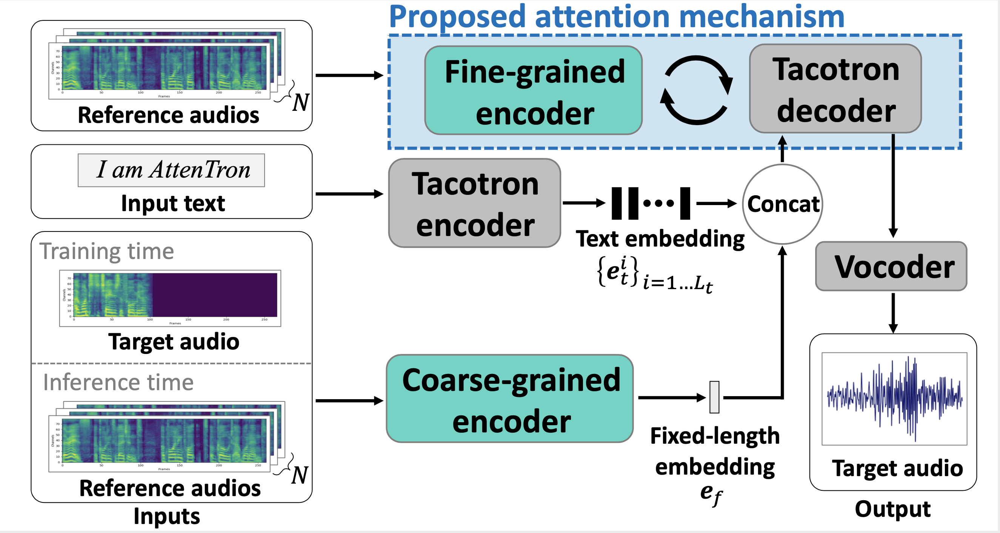

Attentron: Few-shot Text-to-Speech Exploiting Attention-based Variable Length Embedding

* Equal contributions, listed in alphabetical order. † Corresponding author.
Abstract
These examples are sampled from the evaluation set for Table 1 in the paper. Each column corresponds to a single speaker, and each row corresponds to different models.
| VCTK p304 | VCTK p311 | VCTK p316 | VCTK p305 | VCTK p306 | VCTK p312 | |
|---|---|---|---|---|---|---|
| Text | It's totally double standards. | His third goal was superb. | He declined to give further details. | We had a reunion last week. | You'd think there was a match on today. | I think it must be the uniforms. |
| Ground-truth | ||||||
| LDE(1) | ||||||
| LDE(8) | ||||||
| GMVAE(1) | ||||||
| GMVAE(8) | ||||||
| Attentron(1-1) | ||||||
| Attentron(8-8) |
These examples show out-of-domain speaker(LibriTTS) audio synthesis results, which is not introduced in our paper. We used Attentron trained on VCTK dataset which is same as above during cloning LibriTTS speakers' voice. Each column corresponds to a single speaker, and each row corresponds to different models.
Text: By the edge of the river, they stopped and said farewell.
| LibriTTS 100 | LibriTTS 1012 | LibriTTS 1018 | LibriTTS 1025 | LibriTTS 1027 | LibriTTS 1040 | |
|---|---|---|---|---|---|---|
| Reference | ||||||
| Attentron(8-8) |